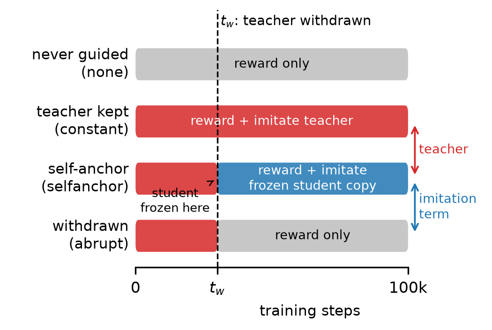
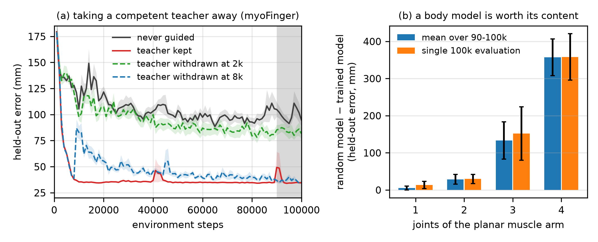
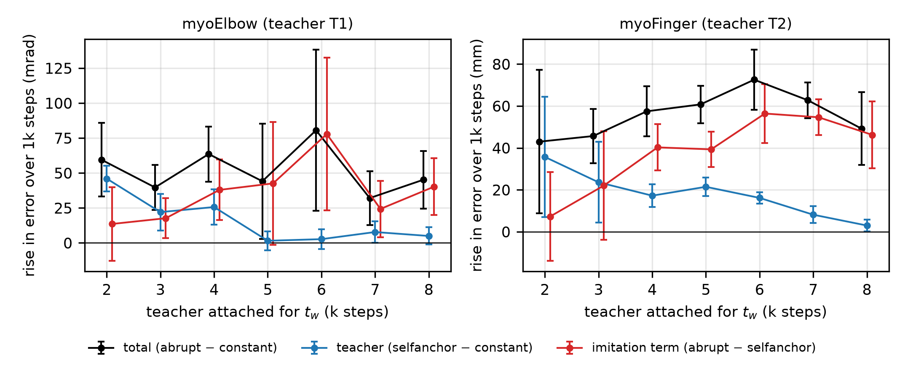
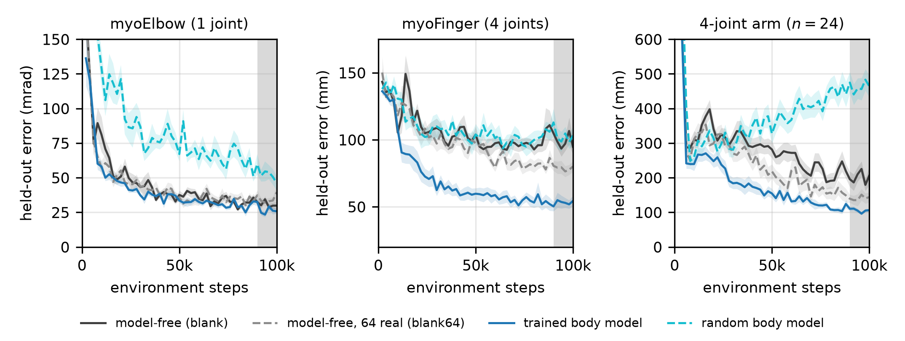

Submitted to IEEE Transactions on Cognitive and Developmental Systems · 2026 · sole author
A competent teacher can be taken away without leaving the learner behind. A body model is worth its content: a model that knows nothing becomes more harmful the more joints there are.
Mu-Hua (Maurice) Wang · National Yang Ming Chiao Tung University
Supersedes the earlier drafts Two Routes to a Motor Prior and What a Motor Prior Is Worth. Not posted to any preprint server.
The whole study, no sound needed. Where the body model comes from, what its content is worth, what a teacher is worth, and what happens when the teacher is taken away. Footage: myoFinger policies at 100,000 steps; every number on a card is a value of the paper.
A motor learner can be helped by a more skilled teacher or by a model of its own body learned from self-generated movement. Withdrawing a teacher removes its knowledge and changes the learner's objective at once, so whether withdrawal leaves the learner worse off, and why it drops, have not been separated; for a body model, whether imagined experience helps because of what the model has learned is rarely tested. This paper uses controls that change one thing at a time, on one soft actor-critic learner and six muscle-driven bodies: an elbow and a finger from MyoSuite and four planar arms of one to four joints. A withdrawn teacher is compared with replacing it by a frozen copy of the student, which keeps the imitation objective and removes only the teacher; a frozen body model learned from reward-free babbling is compared with a random model in identical imagination machinery. On the finger, a learner whose competent teacher is withdrawn ends ahead of one never guided, and the share of the teacher's benefit it keeps rises with the time the teacher was attached, from about a quarter after 2,000 steps to about all of it after 7,000. There, after 4,000 or more steps of attachment, most of the drop that follows withdrawal is the removed imitation term rather than the teacher's not-yet-absorbed knowledge. On planar arms, a random model, whose predictions barely depend on the action, becomes increasingly harmful as joints are added; the babble-trained model avoids this harm.
Withdrawing a teacher changes two things at once: the learner loses the teacher's knowledge, and its training objective changes. The control is a self-anchor: at withdrawal the teacher is replaced by a frozen copy of the student itself, so the imitation term stays and only the teacher is gone.

The conditions. Until tw every guided learner imitates the teacher (red). At tw the withdrawn learner loses both the teacher and the imitation term; the self-anchor keeps the term but points it at a frozen copy of the student (blue). Their differences split the drop into a teacher component and an imitation-term component.

Left: taking a competent teacher away on myoFinger. Learners whose teacher is withdrawn (dashed) drop sharply, recover, and end with far lower error than a learner never guided (grey), the more so the longer they were guided. Right: the body-model result (see below).
A teacher is worth its competence. myoFinger, same seeds and loss. Left: a competent teacher's student (37.46 mm over 12 seeds). Right: the student of a teacher that barely moves (120.53 mm), worse than no teacher at all.

The drop after withdrawal. On the finger, after 4,000 or more guided steps, most of the drop is the removed imitation term (red) rather than the teacher's not-yet-absorbed knowledge (blue).
No deficit against never being guided. On myoFinger the learner whose competent teacher is withdrawn ends −43.25 [−54.72, −31.79] mm ahead of a learner never guided. The share of the teacher's benefit it keeps rises with the time the teacher was attached, from about a quarter after 2,000 steps to about all of it after 7,000; averaged over 2,000–8,000 it is more than half, under both endpoints. On myoElbow, where the teacher is worth little, its benefit goes with it, but the withdrawn learner is not detectably behind a never-guided one, also when trained to 200k.
The control is a random model in the identical imagination machinery. Its predictions barely depend on the action, so its imagined experience tells the learner that actions do not matter. On a series of planar arms, that kind of imagination costs little on one joint and becomes destructive as joints are added; the model learned from babbling avoids the cost. Against model-free learning with the same real data per update, the trained model's own advantage is not shown to grow with joint count.
Content, not machinery. myoFinger at 100k, same held-out target, frame for frame. Left: the babble-trained body model. Right: a random model in the identical imagination loop. Over 12 seeds the trained model is ahead by −50.11 [−64.54, −35.68] mm.
The body model against nothing. Left: the frozen body model. Right: model-free SAC with the same budget. Over 12 seeds: −46.19 [−58.70, −33.69] mm.

Learning curves with the trained body model (blue), a random body model (cyan, dashed) and two model-free baselines (grey). On the four-joint arm the random model ends far above model-free learning while the trained model ends far below it.
The primary results hold under two endpoints (mean over 90–100k and the single 100k evaluation) and survive a Holm correction. Paired-t 95 % intervals; a non-significant cell is not detected, never equal.
| Result | Estimate (95 % CI) | Holds on |
|---|---|---|
| A competent teacher can be taken away Withdrawn minus never guided, pooled over withdrawal at 2k–8k steps; the share of the teacher's benefit kept rises with attachment time (more than half on average, p = 0.0008). | −43.25 [−54.72, −31.79] mm | finger |
| After longer attachment, the drop at withdrawal is mostly the removed imitation term Self-anchor decomposition of the rise in error over the 1,000 steps after withdrawal; withdrawal at 4,000 steps or later, Holm-corrected across withdrawal times. | loss term exceeds teacher component by 17.87 to 46.48 mm | finger |
| A body model is worth its content Trained minus random model in identical machinery; the gap is larger on three and four joints than on one, compared between bodies. | 4 vs 1 joint: −352.27 mm, p < 0.001 | planar arms |
One soft actor-critic learner in every condition (two hidden layers of 128, batch 128, update-to-data ratio 2), twelve matched seeds per condition (twenty-four on the three- and four-joint arms), evaluation on twenty held-out targets disjoint from the eight training targets, 100,000 training steps (the elbow withdrawal also to 200,000). The teacher is a frozen actor joined through an imitation term; its control at withdrawal is the self-anchor. The body model is a forward model learned once from reward-free Ornstein–Uhlenbeck babbling, frozen, and used for short Dyna rollouts; its control is a random model in the same loop. 1,056 runs, about 1,100 single-thread CPU-hours.